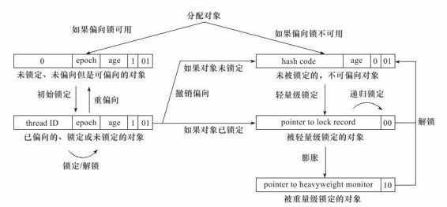

公平锁和非公平锁
- 公平锁：按照等待锁的顺序获取锁
- 非公平所锁：随机获取锁
偏向锁
偏向锁也是JDK 1.6中引入的一项锁优化，它的目的是消除数据在无竞争情况下的同步原语，进一步 提高程序的运行性能。如果说轻量级锁是在无竞争的情况下使用CAS操作去消除同步使用的互斥量，那 偏向锁就是在无竞争的情况下把整个同步都消除掉，连CAS操作都不做了。

轻量级锁
轻量级锁能提升程序同步性能的依据是“对于绝大部分的锁，在整个同步周期内都是不存在竞争 的”，这是一个经验数据。如果没有竞争，轻量级锁使用CAS操作避免了使用互斥量的开销，但如果存在锁竞争，除了互斥量的开销外，还额外发生了CAS操作，因此在有竞争的情况下，轻量级锁会比传统的 重量级锁更慢。
重量级锁
就是正常的加锁行为，互斥加锁。
自旋锁，自适应自旋锁
共享数据的锁定状态时间很短暂，为了这个时间去挂起或者恢复线程代价太高，可以让后面请求锁的那个线程“稍等一下”，但不放弃处理器的执行时间，看看持有锁的线程是否很快就会释放锁。为了让线程等待，我们只需让线程执行一个忙循环（自旋）。 如果自旋时间超过一定次数（默认是10次），仍然没有获得锁，必须挂起线程了。 自适应意味着自旋的时间不再固定了，而是由前一次在同一个锁上的自旋时间及锁的拥有者的状态来决定。
重入锁
锁消除
锁消除是指虚拟机即时编译器在运行时，对一些代码上要求同步，但是被检测到不可能存在共享数 据竞争的锁进行消除。锁消除的主要判定依据来源于逃逸分析的数据支持（第11章已经讲解过逃逸分析 技术），如果判断在一段代码中，堆上的所有数据都不会逃逸出去从而被其他线程访问到，那就可以把 它们当做栈上数据对待，认为它们是线程私有的，同步加锁自然就无须进行
锁粗化
如果一系列的连续操作都对同一个对象反复加锁和解 锁，甚至加锁操作是出现在循环体中的，那即使没有线程竞争，频繁地进行互斥同步操作也会导致不必 要的性能损耗。如果虚拟机探测到有这样一串零碎的操作 都对同一个对象加锁，将会把加锁同步的范围扩展（粗化）到整个操作序列的外部，这样只需要加锁一次就可以了。